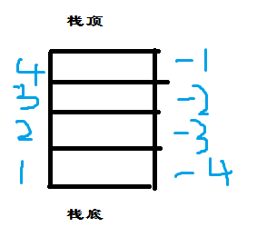

要理解Lua和C++交互，首先要理解Lua堆栈。
简单来说，Lua和C/C++语言通信的主要方法是一个无处不在的虚拟栈。栈的特点是先进后出。
在Lua中，Lua堆栈就是一个struct，堆栈索引的方式可是是正数也可以是负数，区别是：正数索引1永远表示栈底，负数索引-1永远表示栈顶。如图：

栈的数据结构是TValue *stack,TValue代表lua里面的值类型.欲知是如何交互的，详细阅读下面的代码和运行结果后相信你会对lua和c/c++交互的了解肯定是没问题的，静下心来，不懂的都会变成你自己的，曾听说过:”把别人的东西嚼碎的东西还原再把他嚼碎了才是真正掌握了~“
,所以,let’s GO!
test.lua:
|
|
main.c:
|
|
运行结果: